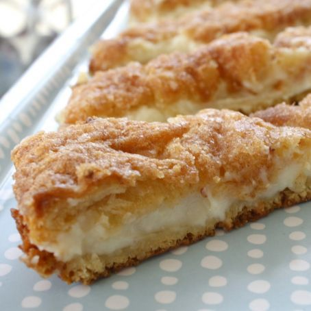

Cream Cheese Squares

Nutrition Facts
213 calories per serving (24); protein 2.8g; carbohydrates 18.4g; fat 14.2g; cholesterol 20.5mg; sodium 245.8mg.
Ingredients
- 2 (8oz) cans refrigerated crescent roll dough
- 2 (8oz) packages cream cheese
- 1 cup white sugar
- 1 teaspoon vanilla extract
- 1/2 cup margarine, melted
- 1/4 cup white sugar
- 1 teaspoon ground cinnamon
Directions
- Preheat oven to 350 degrees fahrenheit and grease a 9x13in pan
- Press one can of dough into the bottom of the pan
- In a medium bowl, mix together cream cheese, sugar and vanilla until smooth. Spread over the dough layer
- Unroll the second can of dough and lay it on top of the cream cheese layer DO NOT PRESS DOWN
- Pour the melted margarine, 1/4 cup sugar and cinnamon over the pan
- Bake for 25-30 minutes
Home